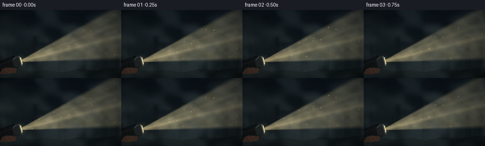
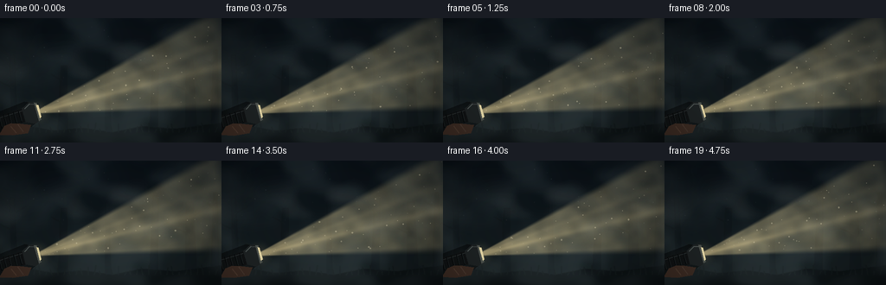

CODING AGENTS AS PIXEL WORLD MODELS
traex/GPT-5.6-Sol · phygen_054
点击播放 · 原生 RGB 像素
逐轮保存的候选
回放视频、检查图与代码变化。
每份候选均可单独播放。实际图片检查记录在下方工具轨迹中。
候选 01播放与检查图
点击播放 · 原生 RGB 像素


展开代码变化
--- 上一保存版本
+++ 本次保存版本
@@ -0,0 +1,217 @@
+from pathlib import Path
+import math
+import numpy as np
+from PIL import Image, ImageDraw, ImageFilter
+import artifact_io
+
+# Procedural, deterministic cinematic scene: a handheld torch revealing dense night fog.
+W, H, N = 256, 144, 20
+SS = 2
+w, h = W * SS, H * SS
+rng = np.random.default_rng(54054)
+
+# Coordinate arrays at supersampled resolution, expressed in output-pixel units.
+yy, xx = np.mgrid[0:h, 0:w].astype(np.float32)
+X, Y = xx / SS, yy / SS
+
+
+def smoothstep(a, b, x):
+ z = np.clip((x-a)/(b-a), 0.0, 1.0)
+ return z*z*(3.0-2.0*z)
+
+
+def value_noise(seed, cell_w, cell_h, ox=0.0, oy=0.0):
+ """Seamless-enough drifting value noise, generated only from deterministic arrays."""
+ r = np.random.default_rng(seed)
+ gw = int(math.ceil(W/cell_w)) + 8
+ gh = int(math.ceil(H/cell_h)) + 8
+ a = (r.random((gh, gw))*255).astype(np.uint8)
+ im = Image.fromarray(a, 'L').resize((int(gw*cell_w*SS), int(gh*cell_h*SS)), Image.Resampling.BICUBIC)
+ # Crop with ample padding, movement remains coherent frame-to-frame.
+ sx = int((3*cell_w + ox)*SS)
+ sy = int((3*cell_h + oy)*SS)
+ ar = np.asarray(im, dtype=np.float32)[sy:sy+h, sx:sx+w] / 255.0
+ return ar
+
+# Background forest layer, fixed so drifting fog passes naturally in front of it.
+def forest_image():
+ im = Image.new('RGBA', (w,h), (0,0,0,0))
+ d = ImageDraw.Draw(im, 'RGBA')
+ # distant tree trunks, intentionally low contrast in the heavy mist
+ trunks = [(17, 4.0, 43), (72, 5.5, 55), (125, 3.5, 48),
+ (177, 5.0, 41), (221, 7.0, 48), (248, 4.5, 37)]
+ for i,(x0,r,top) in enumerate(trunks):
+ lean = [-3,2,-1,3,-2,1][i]
+ col = (7,13,17,155 if i not in (2,4) else 125)
+ d.polygon([(int((x0-r)*SS),h), (int((x0+r)*SS),h),
+ (int((x0+lean+r*.55)*SS),int(top*SS)),
+ (int((x0+lean-r*.55)*SS),int(top*SS))], fill=col)
+ # a few bare branches emerging into haze
+ bx = (x0+lean*.5)*SS
+ for k in range(2):
+ by = (top+18+k*20)*SS
+ side = -1 if (i+k)%2 else 1
+ d.line([(bx,by), ((x0+side*(13+5*k))*SS,(top+10+k*20)*SS)],
+ fill=(8,14,17,100), width=max(1,int(1.5*SS)))
+ # uneven forest floor
+ pts=[(0,h),(0,int(126*SS)),(30*SS,124*SS),(61*SS,130*SS),(96*SS,127*SS),
+ (130*SS,132*SS),(164*SS,125*SS),(202*SS,128*SS),(w,121*SS),(w,h)]
+ d.polygon([(int(a),int(b)) for a,b in pts], fill=(4,9,11,230))
+ # sparse grass silhouettes
+ for x0 in range(4,256,7):
+ ht = 3 + (x0*17 % 9)
+ d.line([(x0*SS,132*SS),((x0-2+(x0%5))*SS,(132-ht)*SS)], fill=(7,13,13,140), width=SS)
+ return im.filter(ImageFilter.GaussianBlur(0.45*SS))
+
+FOREST = forest_image()
+
+# Static tiny distant stars/reflections, mostly veiled by cloud.
+star_xy = rng.uniform([0,8],[256,82],(28,2))
+star_a = rng.uniform(10,34,28)
+
+
+def local_poly(points, src, dvec, pvec):
+ return [(int((src[0]+a*dvec[0]+b*pvec[0])*SS),
+ int((src[1]+a*dvec[1]+b*pvec[1])*SS)) for a,b in points]
+
+
+def draw_flashlight(frame, src, dvec, pvec, phase):
+ """Metal torch and a hand, establishing the physical source of the ray."""
+ layer = Image.new('RGBA',(w,h),(0,0,0,0)); dr=ImageDraw.Draw(layer,'RGBA')
+ # soft contact shadow
+ dr.polygon(local_poly([(-53,-11),(-53,12),(-12,15),(2,8),(2,-8),(-12,-15)],src,dvec,pvec),
+ fill=(0,0,0,110))
+ # rubberized cylindrical handle
+ dr.polygon(local_poly([(-52,-7),(-52,7),(-16,8),(-16,-8)],src,dvec,pvec),
+ fill=(17,20,21,255))
+ dr.line(local_poly([(-50,-5),(-18,-6)],src,dvec,pvec), fill=(62,66,65,150), width=SS)
+ # grip ribs
+ for a in [-46,-40,-34,-28,-22]:
+ dr.line(local_poly([(a,-7),(a,7)],src,dvec,pvec), fill=(4,6,7,230), width=max(1,SS))
+ dr.line(local_poly([(a+1,-6),(a+1,6)],src,dvec,pvec), fill=(45,48,47,110), width=1)
+ # flared metal head
+ dr.polygon(local_poly([(-17,-8),(-17,8),(-7,13),(-1,11),(-1,-11),(-7,-13)],src,dvec,pvec),
+ fill=(32,37,38,255))
+ dr.line(local_poly([(-14,-7),(-7,-11),(-1,-9)],src,dvec,pvec), fill=(115,123,119,160), width=SS)
+ # front bezel and luminous lens, narrow bright cross-section
+ dr.polygon(local_poly([(-2,-11),(1,-10),(1,10),(-2,11)],src,dvec,pvec), fill=(82,87,82,255))
+ dr.polygon(local_poly([(0,-8),(2,-7),(2,7),(0,8)],src,dvec,pvec), fill=(255,239,184,245))
+ # hand wrapped around grip (bottom foreground)
+ skin=(65,47,38,255)
+ dr.polygon(local_poly([(-42,6),(-34,5),(-24,8),(-12,13),(-18,21),(-36,19),(-51,14)],src,dvec,pvec), fill=skin)
+ dr.line(local_poly([(-35,8),(-31,17)],src,dvec,pvec), fill=(105,72,54,180), width=SS)
+ dr.line(local_poly([(-27,8),(-23,18)],src,dvec,pvec), fill=(105,72,54,160), width=SS)
+ frame.alpha_composite(layer)
+
+frames=[]
+for fi in range(N):
+ t=fi/4.0
+ # deep blue-gray night gradient
+ top=np.array([5,12,18],np.float32); bot=np.array([17,25,27],np.float32)
+ grad=np.clip(Y/H,0,1)[...,None]
+ bg=top*(1-grad)+bot*grad
+ # broad, subtle moonless sky mottling
+ nbg=value_noise(101,46,35,ox=(t*1.0)%20,oy=0)
+ bg += (nbg[...,None]-.5)*np.array([5,7,8])
+ bg=np.clip(bg,0,255).astype(np.uint8)
+ frame=Image.fromarray(bg,'RGB').convert('RGBA')
+ frame.alpha_composite(FOREST)
+
+ # Dim pinpoints receding behind the fog.
+ dots=Image.new('RGBA',(w,h),(0,0,0,0)); dd=ImageDraw.Draw(dots,'RGBA')
+ for (sx,sy),a in zip(star_xy,star_a):
+ tw=.65+.35*math.sin(fi*.53+sx)
+ r=0.42*SS
+ dd.ellipse((sx*SS-r,sy*SS-r,sx*SS+r,sy*SS+r),fill=(164,181,178,int(a*tw)))
+ frame.alpha_composite(dots)
+
+ # Back mist: layered, slowly advecting cool fog blankets the entire scene.
+ fog1=value_noise(202,42,30,ox=(t*2.0)%25,oy=(2+math.sin(t*.4))*1.5)
+ fog2=value_noise(303,18,15,ox=(t*4.0)%12,oy=(3+t*.3)%7)
+ wispy=np.clip(.62*fog1+.38*fog2,0,1)
+ fog_alpha=(17+43*smoothstep(.28,.82,wispy))*(.78+.22*smoothstep(15,110,Y))
+ cool=np.empty((h,w,4),np.uint8)
+ cool[...,:3]=np.array([115,133,137],np.uint8)
+ cool[...,3]=np.clip(fog_alpha,0,62).astype(np.uint8)
+ frame.alpha_composite(Image.fromarray(cool,'RGBA'))
+
+ # Torch coordinate frame: nearly fixed, with a natural tiny handheld tremor.
+ angle=-0.270 + .005*math.sin(t*2.1) + .003*math.sin(t*5.4)
+ dvec=np.array([math.cos(angle),math.sin(angle)],np.float32)
+ pvec=np.array([-dvec[1],dvec[0]],np.float32)
+ src=np.array([44.0+.18*math.sin(t*3.1),108.0+.22*math.sin(t*2.4)],np.float32)
+ RX=X-src[0]; RY=Y-src[1]
+ axial=RX*dvec[0]+RY*dvec[1]
+ lateral=RX*pvec[0]+RY*pvec[1]
+ width=2.0+.245*np.maximum(axial,0)
+ inside=(smoothstep(-1.5,4.0,axial)*smoothstep(242,218,axial)*
+ smoothstep(1.10,.84,np.abs(lateral)/(width+1e-3)))
+ # density variations become visible specifically because the ray scatters off the mist
+ beam_noise=value_noise(404,29,20,ox=(t*5.5)%18,oy=(t*.8)%5)
+ fine=value_noise(505,10,8,ox=(t*8.5)%8,oy=(t*1.3)%4)
+ density=np.clip(.25+.72*(.68*beam_noise+.32*fine),0,1)
+ falloff=np.exp(-np.maximum(axial,0)/230.0)
+ pulse=.96+.035*math.sin(t*7.1)+.015*math.sin(t*13.0)
+ strength=inside*falloff*(.30+.75*density)*pulse
+ # central core and a pair of subtle optical streaks
+ core=np.exp(-(lateral/(2.7+.052*np.maximum(axial,0)))**2)*inside*np.exp(-np.maximum(axial,0)/190)
+ strand=(np.exp(-((lateral-0.10*width)/(1.2+.018*np.maximum(axial,0)))**2)*.12 +
+ np.exp(-((lateral+0.38*width)/(1.0+.022*np.maximum(axial,0)))**2)*.08)*inside
+ strength=np.clip(strength+.28*core+strand,0,1)
+ beam=np.zeros((h,w,4),np.uint8)
+ beam[...,:3]=np.array([250,227,164],np.uint8)
+ beam[...,3]=np.clip(strength*154,0,190).astype(np.uint8)
+ beam_im=Image.fromarray(beam,'RGBA').filter(ImageFilter.GaussianBlur(.42*SS))
+ frame.alpha_composite(beam_im)
+
+ # Local luminous patches: denser curling mist catches more light.
+ curls=Image.new('RGBA',(w,h),(0,0,0,0)); cd=ImageDraw.Draw(curls,'RGBA')
+ for j in range(12):
+ base_x=64+j*15.5
+ cx=base_x + (t*(3.0+0.12*j))%17
+ cy=src[1]+(cx-src[0])*math.tan(angle) + math.sin(j*2.2+t*.8)*10
+ bw=13+((j*7)%15); bh=2.3+(j%4)*.8
+ alpha=10+(j*13)%15
+ cd.ellipse(((cx-bw)*SS,(cy-bh)*SS,(cx+bw)*SS,(cy+bh)*SS), fill=(255,238,193,alpha))
+ curls=curls.filter(ImageFilter.GaussianBlur(4.2*SS))
+ frame.alpha_composite(curls)
+
+ # Foreground fog veils drift across ray boundaries, adding depth and thickness.
+ front=value_noise(606,25,19,ox=(t*7.0)%16,oy=(1+math.sin(t*.55))*3)
+ band=np.exp(-((Y-(63+7*np.sin(X/45+t*.65))) / 29)**2)
+ fa=np.clip((front-.48)*58*band,0,35)
+ veil=np.zeros((h,w,4),np.uint8); veil[...,:3]=[156,164,157]; veil[...,3]=fa.astype(np.uint8)
+ frame.alpha_composite(Image.fromarray(veil,'RGBA').filter(ImageFilter.GaussianBlur(1.2*SS)))
+
+ # Airborne droplets/motes, only visible inside the light cone.
+ motes=Image.new('RGBA',(w,h),(0,0,0,0)); md=ImageDraw.Draw(motes,'RGBA')
+ for j in range(46):
+ # Stable drifting particles with wrapped trajectories.
+ px=50+((j*47.37 + t*(7.5+(j%5))) % 205)
+ center_y=src[1]+(px-src[0])*math.tan(angle)
+ half=2+.235*(px-src[0])
+ py=center_y + (((j*29.17+t*(2.2+(j%3)))%(2*half))-half)
+ if 0<py<H:
+ rr=(.25+.18*(j%4))*SS
+ a=38+(j*19)%78
+ md.ellipse((px*SS-rr,py*SS-rr,px*SS+rr,py*SS+rr), fill=(255,242,202,a))
+ motes=motes.filter(ImageFilter.GaussianBlur(.18*SS))
+ frame.alpha_composite(motes)
+
+ # Aperture glow goes behind the physical torch.
+ glow=Image.new('RGBA',(w,h),(0,0,0,0)); gd=ImageDraw.Draw(glow,'RGBA')
+ for r,a in [(15,10),(9,20),(4,65)]:
+ gd.ellipse(((src[0]-r)*SS,(src[1]-r)*SS,(src[0]+r)*SS,(src[1]+r)*SS), fill=(255,233,172,a))
+ glow=glow.filter(ImageFilter.GaussianBlur(3*SS))
+ frame.alpha_composite(glow)
+ draw_flashlight(frame,src,dvec,pvec,t)
+
+ # Gentle vignette focuses the volumetric shaft.
+ arr=np.asarray(frame.convert('RGB'),dtype=np.float32)
+ vign=np.clip(1.0-.28*((X-128)/155)**2-.20*((Y-72)/92)**2,.65,1.0)
+ arr*=vign[...,None]
+ out=Image.fromarray(np.clip(arr,0,255).astype(np.uint8),'RGB').resize((W,H),Image.Resampling.LANCZOS)
+ frames.append(np.asarray(out,dtype=np.uint8))
+
+frames=np.stack(frames,axis=0)
+artifact_io.save(frames,Path(__file__).resolve().parent)
可观测工具轨迹
实际执行的命令与返回图片。
命令 1exit 0
/bin/bash -lc "cat prompt.txt && printf '\\n---RULES---\\n' && cat GENERATION_RULES.md && printf '\\n---SPEC---\\n' && cat task_spec.json"
命令 2exit 0
/bin/bash -lc "find . -maxdepth 2 -type f -printf '%p %s bytes\\n' | sort"
命令 3exit 0
/bin/bash -lc "sed -n '1,240p' artifact_io.py"
命令 4exit 0
/bin/bash -lc "cat > generate.py <<'PY'
from pathlib import Path
import math
import numpy as np
from PIL import Image, ImageDraw, ImageFilter
import artifact_io
# Procedural, deterministic cinematic scene: a handheld torch revealing dense night fog.
W, H, N = 256, 144, 20
SS = 2
w, h = W * SS, H * SS
rng = np.random.default_rng(54054)
# Coordinate arrays at supersampled resolution, expressed in output-pixel units.
yy, xx = np.mgrid[0:h, 0:w].astype(np.float32)
X, Y = xx / SS, yy / SS
def smoothstep(a, b, x):
z = np.clip((x-a)/(b-a), 0.0, 1.0)
return z*z*(3.0-2.0*z)
def value_noise(seed, cell_w, cell_h, ox=0.0, oy=0.0):
\"\"\"Seamless-enough drifting value noise, generated only from deterministic arrays.\"\"\"
r = np.random.default_rng(seed)
gw = int(math.ceil(W/cell_w)) + 8
gh = int(math.ceil(H/cell_h)) + 8
a = (r.random((gh, gw))*255).astype(np.uint8)
im = Image.fromarray(a, 'L').resize((int(gw*cell_w*SS), int(gh*cell_h*SS)), Image.Resampling.BICUBIC)
# Crop with ample padding, movement remains coherent frame-to-frame.
sx = int((3*cell_w + ox)*SS)
sy = int((3*cell_h + oy)*SS)
ar = np.asarray(im, dtype=np.float32)[sy:sy+h, sx:sx+w] / 255.0
return ar
# Background forest layer, fixed so drifting fog passes naturally in front of it.
def forest_image():
im = Image.new('RGBA', (w,h), (0,0,0,0))
d = ImageDraw.Draw(im, 'RGBA')
# distant tree trunks, intentionally low contrast in the heavy mist
trunks = [(17, 4.0, 43), (72, 5.5, 55), (125, 3.5, 48),
(177, 5.0, 41), (221, 7.0, 48), (248, 4.5, 37)]
for i,(x0,r,top) in enumerate(trunks):
lean = [-3,2,-1,3,-2,1][i]
col = (7,13,17,155 if i not in (2,4) else 125)
d.polygon([(int((x0-r)*SS),h), (int((x0+r)*SS),h),
(int((x0+lean+r*.55)*SS),int(top*SS)),
(int((x0+lean-r*.55)*SS),int(top*SS))], fill=col)
# a few bare branches emerging into haze
bx = (x0+lean*.5)*SS
for k in range(2):
by = (top+18+k*20)*SS
side = -1 if (i+k)%2 else 1
d.line([(bx,by), ((x0+side*(13+5*k))*SS,(top+10+k*20)*SS)],
fill=(8,14,17,100), width=max(1,int(1.5*SS)))
# uneven forest floor
pts=[(0,h),(0,int(126*SS)),(30*SS,124*SS),(61*SS,130*SS),(96*SS,127*SS),
(130*SS,132*SS),(164*SS,125*SS),(202*SS,128*SS),(w,121*SS),(w,h)]
d.polygon([(int(a),int(b)) for a,b in pts], fill=(4,9,11,230))
# sparse grass silhouettes
for x0 in range(4,256,7):
ht = 3 + (x0*17 % 9)
d.line([(x0*SS,132*SS),((x0-2+(x0%5))*SS,(132-ht)*SS)], fill=(7,13,13,140), width=SS)
return im.filter(ImageFilter.GaussianBlur(0.45*SS))
FOREST = forest_image()
# Static tiny distant stars/reflections, mostly veiled by cloud.
star_xy = rng.uniform([0,8],[256,82],(28,2))
star_a = rng.uniform(10,34,28)
def local_poly(points, src, dvec, pvec):
return [(int((src[0]+a*dvec[0]+b*pvec[0])*SS),
int((src[1]+a*dvec[1]+b*pvec[1])*SS)) for a,b in points]
def draw_flashlight(frame, src, dvec, pvec, phase):
\"\"\"Metal torch and a hand, establishing the physical source of the ray.\"\"\"
layer = Image.new('RGBA',(w,h),(0,0,0,0)); dr=ImageDraw.Draw(layer,'RGBA')
# soft contact shadow
dr.polygon(local_poly([(-53,-11),(-53,12),(-12,15),(2,8),(2,-8),(-12,-15)],src,dvec,pvec),
fill=(0,0,0,110))
# rubberized cylindrical handle
dr.polygon(local_poly([(-52,-7),(-52,7),(-16,8),(-16,-8)],src,dvec,pvec),
fill=(17,20,21,255))
dr.line(local_poly([(-50,-5),(-18,-6)],src,dvec,pvec), fill=(62,66,65,150), width=SS)
# grip ribs
for a in [-46,-40,-34,-28,-22]:
dr.line(local_poly([(a,-7),(a,7)],src,dvec,pvec), fill=(4,6,7,230), width=max(1,SS))
dr.line(local_poly([(a+1,-6),(a+1,6)],src,dvec,pvec), fill=(45,48,47,110), width=1)
# flared metal head
dr.polygon(local_poly([(-17,-8),(-17,8),(-7,13),(-1,11),(-1,-11),(-7,-13)],src,dvec,pvec),
fill=(32,37,38,255))
dr.line(local_poly([(-14,-7),(-7,-11),(-1,-9)],src,dvec,pvec), fill=(115,123,119,160), width=SS)
# front bezel and luminous lens, narrow bright cross-section
dr.polygon(local_poly([(-2,-11),(1,-10),(1,10),(-2,11)],src,dvec,pvec), fill=(82,87,82,255))
dr.polygon(local_poly([(0,-8),(2,-7),(2,7),(0,8)],src,dvec,pvec), fill=(255,239,184,245))
# hand wrapped around grip (bottom foreground)
skin=(65,47,38,255)
dr.polygon(local_poly([(-42,6),(-34,5),(-24,8),(-12,13),(-18,21),(-36,19),(-51,14)],src,dvec,pvec), fill=skin)
dr.line(local_poly([(-35,8),(-31,17)],src,dvec,pvec), fill=(105,72,54,180), width=SS)
dr.line(local_poly([(-27,8),(-23,18)],src,dvec,pvec), fill=(105,72,54,160), width=SS)
frame.alpha_composite(layer)
frames=[]
for fi in range(N):
t=fi/4.0
# deep blue-gray night gradient
top=np.array([5,12,18],np.float32); bot=np.array([17,25,27],np.float32)
grad=np.clip(Y/H,0,1)[...,None]
bg=top*(1-grad)+bot*grad
# broad, subtle moonless sky mottling
nbg=value_noise(101,46,35,ox=(t*1.0)%20,oy=0)
bg += (nbg[...,None]-.5)*np.array([5,7,8])
bg=np.clip(bg,0,255).astype(np.uint8)
frame=Image.fromarray(bg,'RGB').convert('RGBA')
frame.alpha_composite(FOREST)
# Dim pinpoints receding behind the fog.
dots=Image.new('RGBA',(w,h),(0,0,0,0)); dd=ImageDraw.Draw(dots,'RGBA')
for (sx,sy),a in zip(star_xy,star_a):
tw=.65+.35*math.sin(fi*.53+sx)
r=0.42*SS
dd.ellipse((sx*SS-r,sy*SS-r,sx*SS+r,sy*SS+r),fill=(164,181,178,int(a*tw)))
frame.alpha_composite(dots)
# Back mist: layered, slowly advecting cool fog blankets the entire scene.
fog1=value_noise(202,42,30,ox=(t*2.0)%25,oy=(2+math.sin(t*.4))*1.5)
fog2=value_noise(303,18,15,ox=(t*4.0)%12,oy=(3+t*.3)%7)
wispy=np.clip(.62*fog1+.38*fog2,0,1)
fog_alpha=(17+43*smoothstep(.28,.82,wispy))*(.78+.22*smoothstep(15,110,Y))
cool=np.empty((h,w,4),np.uint8)
cool[...,:3]=np.array([115,133,137],np.uint8)
cool[...,3]=np.clip(fog_alpha,0,62).astype(np.uint8)
frame.alpha_composite(Image.fromarray(cool,'RGBA'))
# Torch coordinate frame: nearly fixed, with a natural tiny handheld tremor.
angle=-0.270 + .005*math.sin(t*2.1) + .003*math.sin(t*5.4)
dvec=np.array([math.cos(angle),math.sin(angle)],np.float32)
pvec=np.array([-dvec[1],dvec[0]],np.float32)
src=np.array([44.0+.18*math.sin(t*3.1),108.0+.22*math.sin(t*2.4)],np.float32)
RX=X-src[0]; RY=Y-src[1]
axial=RX*dvec[0]+RY*dvec[1]
lateral=RX*pvec[0]+RY*pvec[1]
width=2.0+.245*np.maximum(axial,0)
inside=(smoothstep(-1.5,4.0,axial)*smoothstep(242,218,axial)*
smoothstep(1.10,.84,np.abs(lateral)/(width+1e-3)))
# density variations become visible specifically because the ray scatters off the mist
beam_noise=value_noise(404,29,20,ox=(t*5.5)%18,oy=(t*.8)%5)
fine=value_noise(505,10,8,ox=(t*8.5)%8,oy=(t*1.3)%4)
density=np.clip(.25+.72*(.68*beam_noise+.32*fine),0,1)
falloff=np.exp(-np.maximum(axial,0)/230.0)
pulse=.96+.035*math.sin(t*7.1)+.015*math.sin(t*13.0)
strength=inside*falloff*(.30+.75*density)*pulse
# central core and a pair of subtle optical streaks
core=np.exp(-(lateral/(2.7+.052*np.maximum(axial,0)))**2)*inside*np.exp(-np.maximum(axial,0)/190)
strand=(np.exp(-((lateral-0.10*width)/(1.2+.018*np.maximum(axial,0)))**2)*.12 +
np.exp(-((lateral+0.38*width)/(1.0+.022*np.maximum(axial,0)))**2)*.08)*inside
strength=np.clip(strength+.28*core+strand,0,1)
beam=np.zeros((h,w,4),np.uint8)
beam[...,:3]=np.array([250,227,164],np.uint8)
beam[...,3]=np.clip(strength*154,0,190).astype(np.uint8)
beam_im=Image.fromarray(beam,'RGBA').filter(ImageFilter.GaussianBlur(.42*SS))
frame.alpha_composite(beam_im)
# Local luminous patches: denser curling mist catches more light.
curls=Image.new('RGBA',(w,h),(0,0,0,0)); cd=ImageDraw.Draw(curls,'RGBA')
for j in range(12):
base_x=64+j*15.5
cx=base_x + (t*(3.0+0.12*j))%17
cy=src[1]+(cx-src[0])*math.tan(angle) + math.sin(j*2.2+t*.8)*10
bw=13+((j*7)%15); bh=2.3+(j%4)*.8
alpha=10+(j*13)%15
cd.ellipse(((cx-bw)*SS,(cy-bh)*SS,(cx+bw)*SS,(cy+bh)*SS), fill=(255,238,193,alpha))
curls=curls.filter(ImageFilter.GaussianBlur(4.2*SS))
frame.alpha_composite(curls)
# Foreground fog veils drift across ray boundaries, adding depth and thickness.
front=value_noise(606,25,19,ox=(t*7.0)%16,oy=(1+math.sin(t*.55))*3)
band=np.exp(-((Y-(63+7*np.sin(X/45+t*.65))) / 29)**2)
fa=np.clip((front-.48)*58*band,0,35)
veil=np.zeros((h,w,4),np.uint8); veil[...,:3]=[156,164,157]; veil[...,3]=fa.astype(np.uint8)
frame.alpha_composite(Image.fromarray(veil,'RGBA').filter(ImageFilter.GaussianBlur(1.2*SS)))
# Airborne droplets/motes, only visible inside the light cone.
motes=Image.new('RGBA',(w,h),(0,0,0,0)); md=ImageDraw.Draw(motes,'RGBA')
for j in range(46):
# Stable drifting particles with wrapped trajectories.
px=50+((j*47.37 + t*(7.5+(j%5))) % 205)
center_y=src[1]+(px-src[0])*math.tan(angle)
half=2+.235*(px-src[0])
py=center_y + (((j*29.17+t*(2.2+(j%3)))%(2*half))-half)
if 0<py<H:
rr=(.25+.18*(j%4))*SS
a=38+(j*19)%78
md.ellipse((px*SS-rr,py*SS-rr,px*SS+rr,py*SS+rr), fill=(255,242,202,a))
motes=motes.filter(ImageFilter.GaussianBlur(.18*SS))
frame.alpha_composite(motes)
# Aperture glow goes behind the physical torch.
glow=Image.new('RGBA',(w,h),(0,0,0,0)); gd=ImageDraw.Draw(glow,'RGBA')
for r,a in [(15,10),(9,20),(4,65)]:
gd.ellipse(((src[0]-r)*SS,(src[1]-r)*SS,(src[0]+r)*SS,(src[1]+r)*SS), fill=(255,233,172,a))
glow=glow.filter(ImageFilter.GaussianBlur(3*SS))
frame.alpha_composite(glow)
draw_flashlight(frame,src,dvec,pvec,t)
# Gentle vignette focuses the volumetric shaft.
arr=np.asarray(frame.convert('RGB'),dtype=np.float32)
vign=np.clip(1.0-.28*((X-128)/155)**2-.20*((Y-72)/92)**2,.65,1.0)
arr*=vign[...,None]
out=Image.fromarray(np.clip(arr,0,255).astype(np.uint8),'RGB').resize((W,H),Image.Resampling.LANCZOS)
frames.append(np.asarray(out,dtype=np.uint8))
frames=np.stack(frames,axis=0)
artifact_io.save(frames,Path(__file__).resolve().parent)
PY
python generate.py
ls -l pixels.npz inspection.png index.html frames/00.png"视觉工具实际返回图片 1

保存候选 1 份；完成命令 4 次；可验证图片返回 1 张。原始 API 响应与完整日志保留在本地。